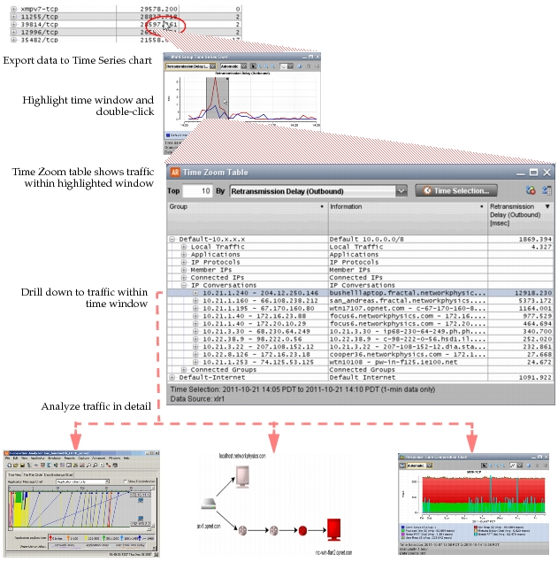

Time Zoom Table Time Zoom tables are useful when you are analyzing a Time Series chart and want to drill down into a specific time window that is independent of the current project time. First, you highlight a time window of interest for a specific set of groups and metrics. Then you double-click and drill down to get “time zoom” details such as the top Applications, Business Groups, and IPs for that time window. After you drill down and identify traffic of interest, you can analyze the traffic using Response Time Composition charts, Favorites tables, AppTransaction, and so on. Figure 9 Drilling Down to a Time Zoom Table: Example Workflow  Time Zoom tables support in-depth troubleshooting workflows such as: 1) Export one or more groups/metrics to a Time Series Chart. 2) Highlight (or zoom in to) a time window of interest in the chart. 3) Double-click in the highlighted region. A new Time Zoom table shows a drilldown table for the selected group(s), metric(s), and time window. From here, you can a) Drill down to individual groups (IPs, IP Conversations, and so on). b) Right-click on a group to analyze in a Response Time Composition chart, IP topology, Favorites table, AppTransaction window, and so on. Note the following: You can create Time Zoom tables from charts only. When you create a Time Zoom table from a Time Series chart, the time window in the new table is set as follows: – If a time region is highlighted in the chart, the time window is set to the highlighted region. – Otherwise, the time window is set to the zoom level in the chart. You can create Time Zoom tables from other types of charts such as Pie, Distribution, and Correlation charts. To create a new table, right-click on a group in the legend and choose Send To > Time Zoom Table. When you create a Time Zoom table from a non-Time Series chart, the view time is set to the project time. Each Time Zoom table has its own time settings that are independent of the project time. To lock the project time to a specific Time Zoom table, click Time Settings and select the Lock Project time to Insight Time checkbox.